Hands-on Introduction to R 2023
- Introduction: what is data analysis and R basics
- Data visualization and reporting
- Data transformation 1: extract, summarize
- Data transformation 2: join, pivot
- Data cleansing and conversion: numbers, text
- Data input and interpretation
- Statistical modeling 1: probability distribution, likelihood
- Statistical modeling 2: linear regression
https://heavywatal.github.io/slides/english2023r/
Purposes of this hands-on lectures
✅ Every biological research involves data and models
✅ You want to do reproducible analysis
✅ Learn how to do it and how to learn more
⬜ Glance at the basics of data analysis
You don’t have to remember every command.
Just repeat forgetting and searching.
What do you want to do with data?
- to understand phenomena
- to predict future
- to classify objects
- to control behavior
- to generate something new
Is analysis necessary for that?
Why not just raw data?
Look back day 1
Mathematical models in data science
Mathematical expression of assumptions to simulate data generation
e.g., the larger the more expensive: $\text{price} = A \times \text{carat} + B + \epsilon$
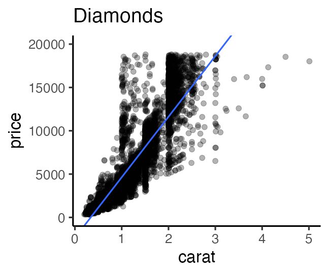
- Regression
- express y as a function of x.
Extending linear regression

Linear Model (LM) 👈 #7 today
↓ probability distribution
Generalized Linear Model (GLM) — #8 next time
↓ individual difference, random effect
Generalized Linear Mixed Model (GLMM)
↓ flexible modelling
Hierarchical Bayesian Model (HBM)
データ解析のための統計モデリング入門 久保拓弥 2012 より改変
Two parts to a regression model
-
Define a family of models: express generic pattern
- straight line: $y = a_1 + a_2 x$
- log curve: $\log(y) = a_1 + a_2 x$
- quadratic curve: $y = a_1 + a_2 x^2$
-
Generate a fitted model: adjust parameters to get closer to the data
- $y = 3x + 7$
- $y = 9x^2$
Can see a strong pattern: the taller the heavier
The relationship looks linear, $y = a x + b$.
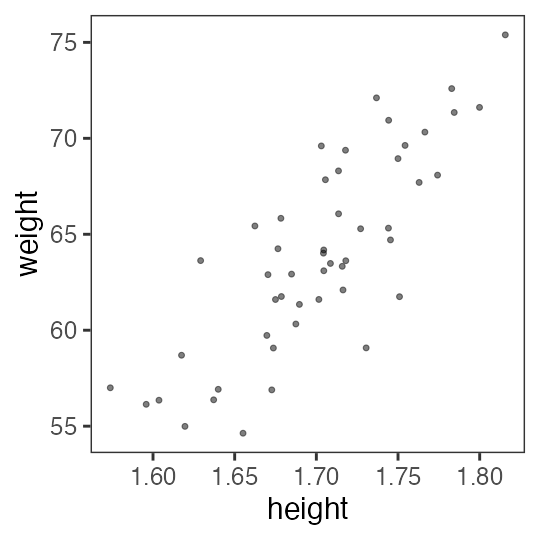
Can see a strong pattern: the taller the heavier
The relationship looks linear, $y = a x + b$.
OK, let’s try random slope a and intersect b:
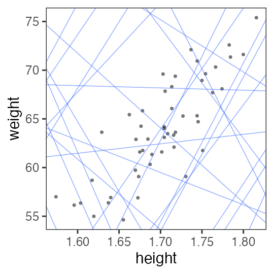
Need to find a good slope and intersect.
Ordinary Least Square (OLS)
minimizes the residual sum of squares (RSS) from the regression line.
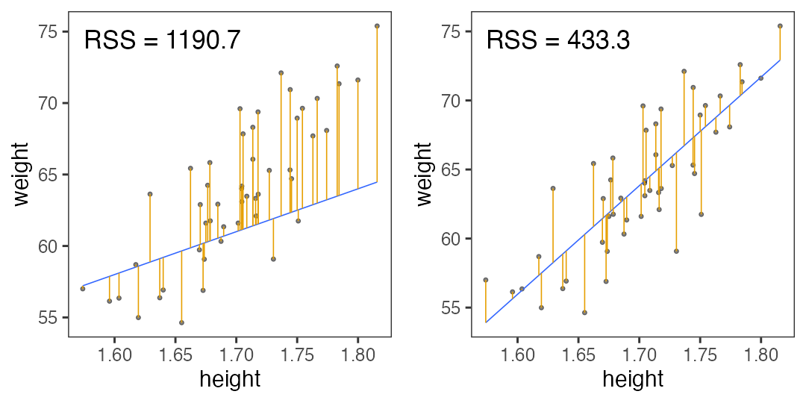
Searching for models to minimize RSS
Try random values, and pick the best ones.
May need to generate much more to find good one.
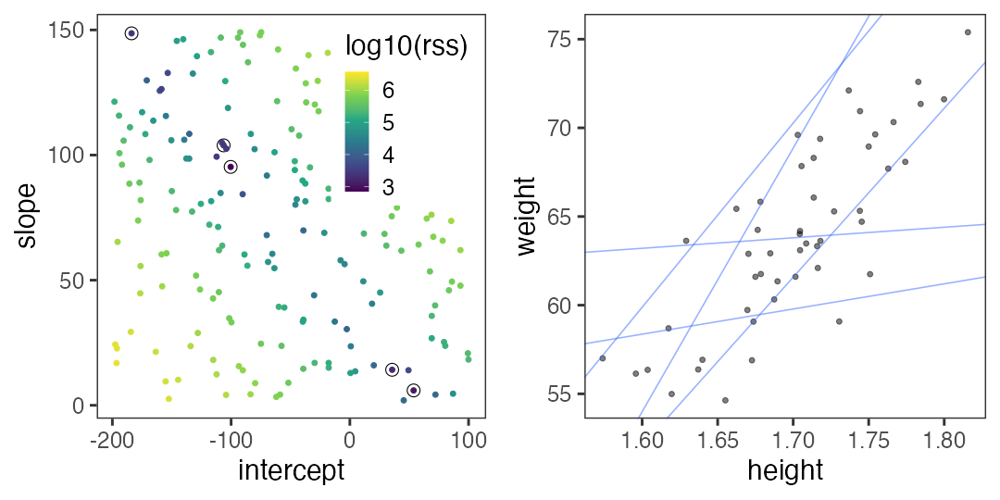
Searching for models to minimize RSS
Grid search: generate an evenly spaced grid of points.
Slightly more efficient than random search?
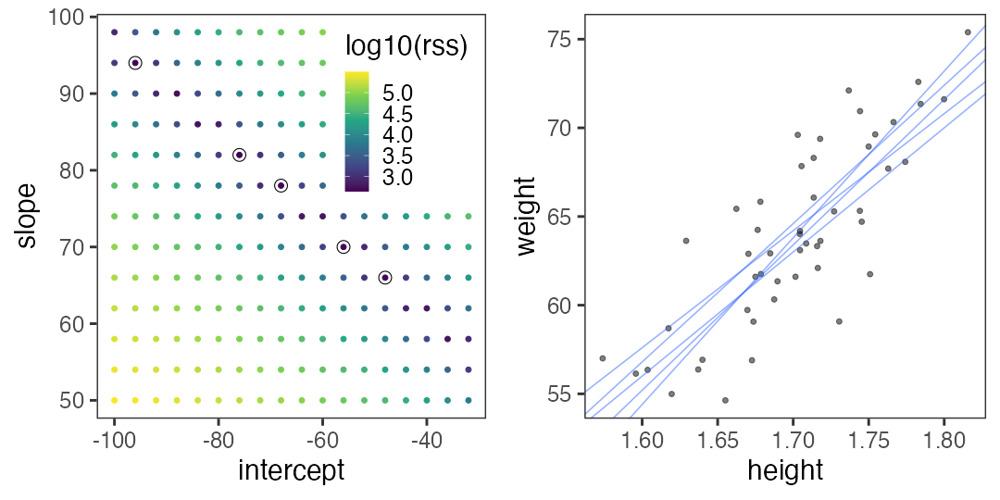
There are many other optimization techniques although not covered here.
R can find the optimum in an instant
par_init = c(intercept = 0, slope = 0)
result = optim(par_init, fn = rss_weight, data = df_weight)
result$par
intercept slope
-69.68394 78.53490
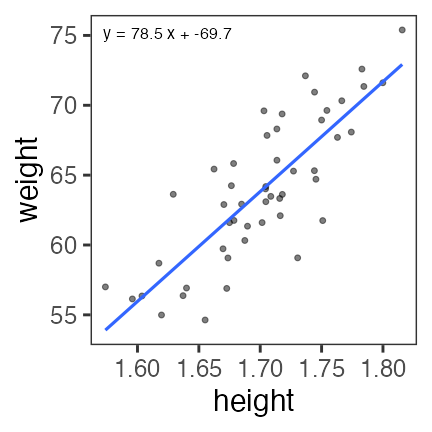
The code above is for general optimization.
For simple linear regression, an easier way is as follows…
lm() function to fit linear models
fit = lm(data = mpg, formula = hwy ~ displ)
broom::tidy(fit)
term estimate std.error statistic p.value
1 (Intercept) 35.697651 0.7203676 49.55477 2.123519e-125
2 displ -3.530589 0.1945137 -18.15085 2.038974e-46
mpg_added = modelr::add_predictions(mpg, fit, type = "response")
ggplot(mpg_added) + aes(displ, hwy) + geom_point() +
geom_line(aes(y = pred), linewidth = 1, color = "#3366ff")
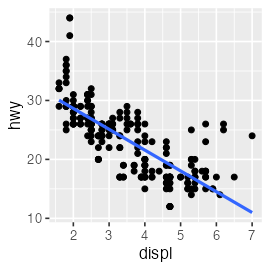
🔰 Try lm() with diamonds and iris.
Straight LM does not fit all
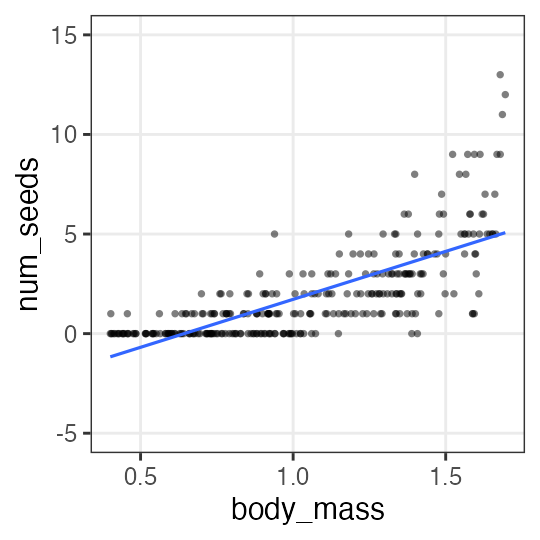
- Prediction goes below zero whereas all the observations are positive.
- Y values are integer. Their dispersion is larger when X is larger.
Straight LM does not fit all
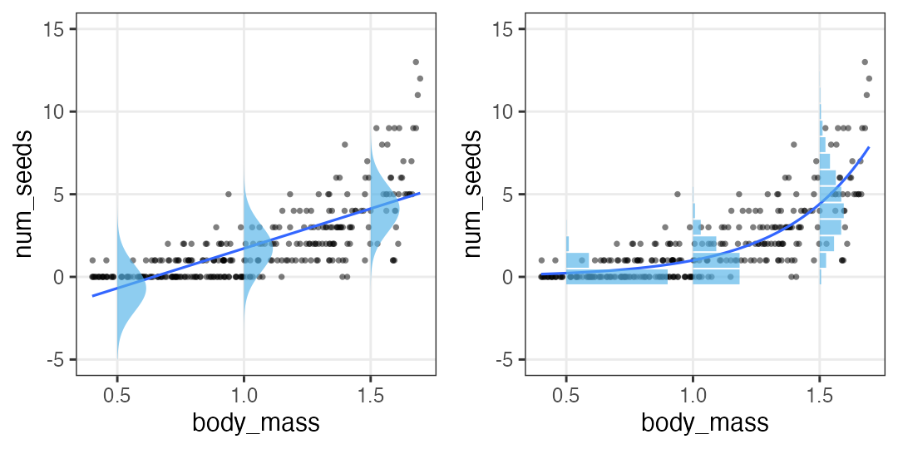
- Prediction goes below zero whereas all the observations are positive.
- Y values are integer. Their dispersion is larger when X is larger.
- Let’s learn statistical modelling for better fitting to the data.
Extending linear regression
Linear Model (LM) 👈 #7 today
↓ probability distribution
Generalized Linear Model (GLM) — #8 next time
↓ individual difference, random effect
Generalized Linear Mixed Model (GLMM)
↓ flexible modelling
Hierarchical Bayesian Model (HBM)
データ解析のための統計モデリング入門 久保拓弥 2012 より改変
Probability distribution
The relationship between phenomena and their frequencies.
- empirical distribution
- created by collecting samples.
- e.g., rolling a dice 12 times, heights of 1000 students:
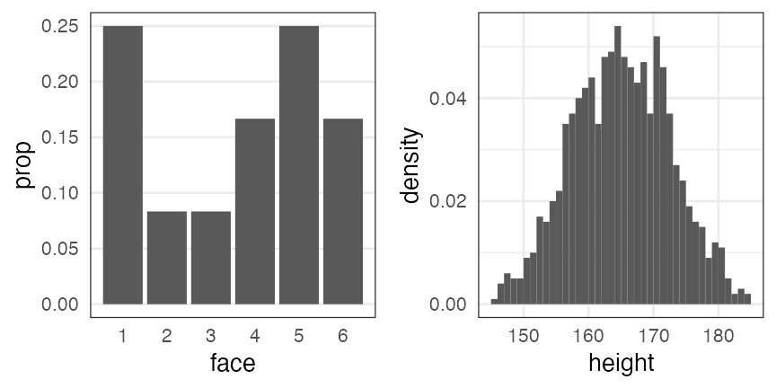
- theoretical distribution
- described with math equation and a few parameters.
Random variable $X$ follows probability distribution $f$
$X \sim f(\theta)$
e.g.,
The number of heads in tossing 3 fair coins $X$ follows binomial distribution.
$X \sim \text{Binomial}(n = 3, p = 0.5)$
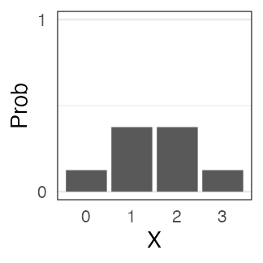
Let’s experiment.
Record repeated trials
The number of heads observed in tossing 3 fair coins: $X$
trial 1: H T H → $X = 2$
trial 2: T T T → $X = 0$
trial 3: H T T → $X = 1$, subsequently, $2, 1, 3, 0, 2, \ldots$
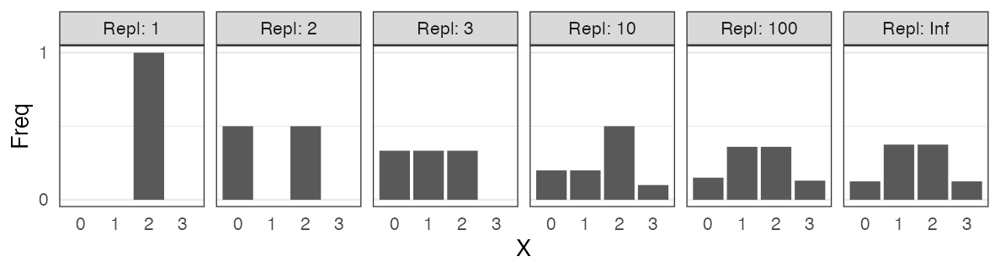
0 and 3 is rare. 1 and 2 are three times more likely.
You can generate similar values without tossing coins
- The number of heads $X$ observed in tossing 3 fair coins.
- Random samples $X$ from the binomial distribution with $n = 3, p = 0.5$.
↓ sample
{2, 0, 1, 2, 1, 3, 0, 2, …}
These are so similar that we can say
“The number of heads in n tosses follows binary distribution.”
Conversely, we can understand it like
“Random variable of binomial distribution is the number of successes in n trials.”
A kind of statistical modelling
Tossing 3 fair coins repeatedly {2, 0, 1, 2, 1, 3, 0, 2, …}
↓ describe with only two parameters. information reduction.
Can reproduce with binary distribution with $n = 3, p = 0.5$

Any other probability distributions related to real phenomena like this?
Major probability distributions and related phenomena
- Discrete uniform distribution
- コインの表裏、サイコロの出目1–6
- Negative binomial distribution (Geometric distribution if n = 1)
- 成功率pの試行が初めて成功するまでの失敗回数
- Binomial distribution
- 成功率p、試行回数nのうちの成功回数
- Poisson distribution
- 単位時間あたり平均$\lambda$回起こる事象の発生回数
- Gamma distribution (Exponential distribution if k = 1)
- ポアソン過程でk回起こるまでの待ち時間
- Normal/Gaussian distribution
- 確率変数の和、平均値
Discrete uniform distribution
同じ確率で起こるn通りの事象のうちXが起こる確率
e.g., コインの表裏、サイコロの出目1–6
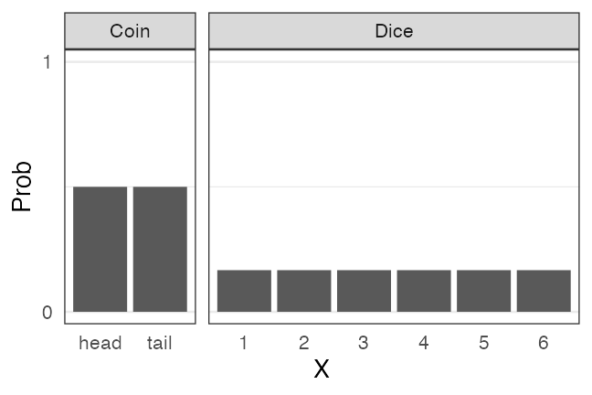
🔰 一様分布になりそうな例を考えてみよう
Geometric $~\text{Geom}(p)$
成功率pの試行が初めて成功するまでの失敗回数
e.g., コイントスで表が出るまでに何回裏が出るか
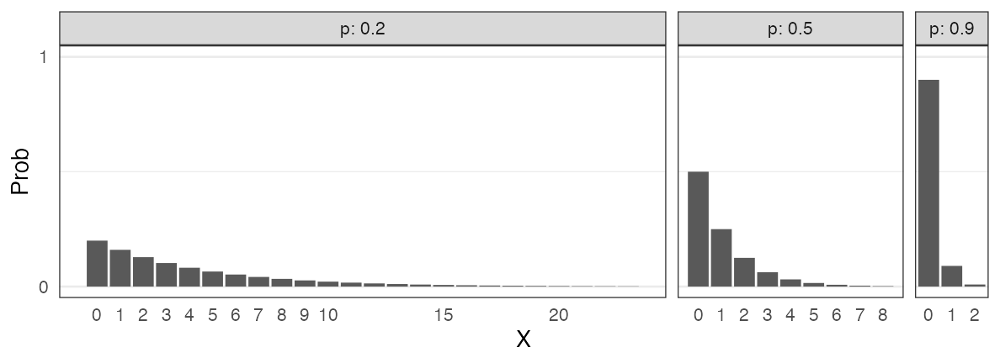
\[ \text{Prob}(X = k \mid p) = p (1 - p)^k \]
「初めて成功するまでの試行回数」とする定義もある。
🔰 幾何分布になりそうな例を考えてみよう
負の二項分布 $~\text{NB}(n, p)$
成功率pの試行がn回成功するまでの失敗回数X。 n = 1 のとき幾何分布と一致。
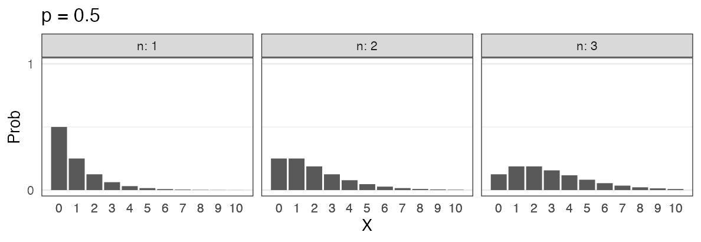
\[ \text{Prob}(X = k \mid n,~p) = \binom {n + k - 1} k p^n (1 - p)^k \]
失敗回数ではなく試行回数を変数とする定義もある。
🔰 負の二項分布になりそうな例を考えてみよう
二項分布 $~\text{Binomial}(n,~p)$
確率$p$で当たるクジを$n$回引いてX回当たる確率。平均は$np$。
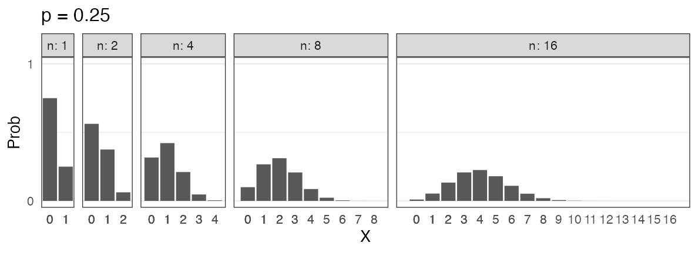
\[ \text{Prob}(X = k \mid n,~p) = \binom n k p^k (1 - p)^{n - k} \]
🔰 二項分布になりそうな例を考えてみよう
ポアソン分布 $~\text{Poisson}(\lambda)$
平均$\lambda$で単位時間(空間)あたりに発生する事象の回数。
e.g., 1時間あたりのメッセージ受信件数、メッシュ区画内の生物個体数
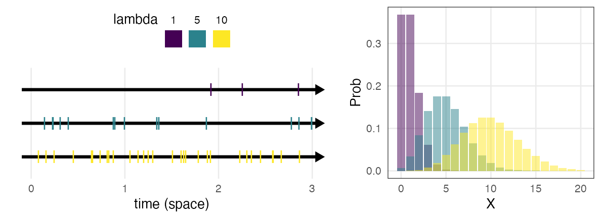
\[ \text{Prob}(X = k \mid \lambda) = \frac {\lambda^k e^{-\lambda}} {k!} \]
二項分布の極限 $(\lambda = np;~n \to \infty;~p \to 0)$。
めったに起きないことを何回も試行するような感じ。
指数分布 $~\text{Exp}(\lambda)$
ポアソン過程の事象の発生間隔。平均は $1 / \lambda$ 。
e.g., メッセージの受信間隔、道路沿いに落ちてる手袋の間隔
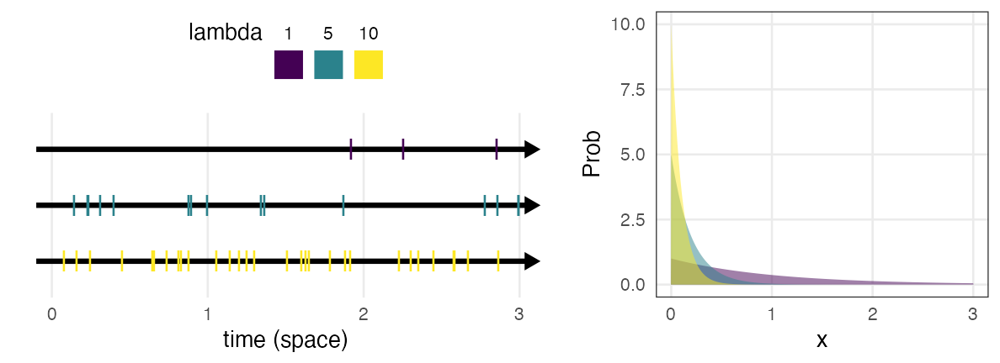
\[ \text{Prob}(x \mid \lambda) = \lambda e^{-\lambda x} \]
幾何分布の連続値版。
🔰 ポアソン分布・指数分布になりそうな例を考えてみよう
ガンマ分布 $~\text{Gamma}(k,~\lambda)$
ポアソン過程の事象k回発生までの待ち時間
e.g., メッセージを2つ受信するまでの待ち時間
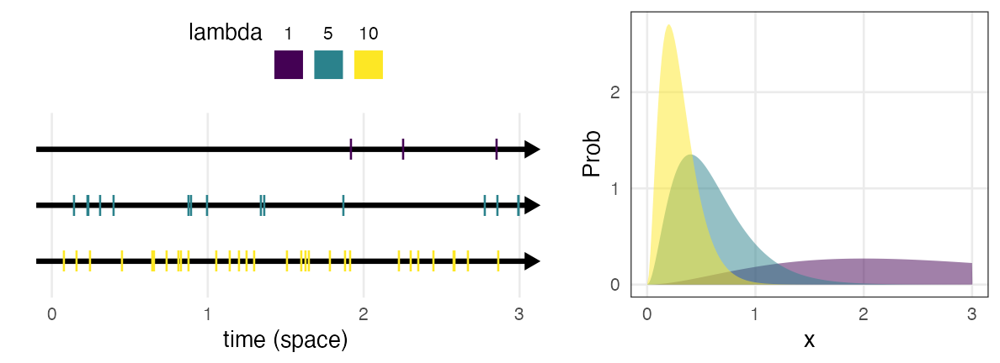
\[ \text{Prob}(x \mid k,~\lambda) = \frac {\lambda^k x^{k - 1} e^{-\lambda x}} {\Gamma(k)} \]
指数分布をkのぶん右に膨らませた感じ。
shapeパラメータ $k = 1$ のとき指数分布と一致。
正規分布 $~\mathcal{N}(\mu,~\sigma)$
平均 $\mu$、標準偏差 $\sigma$ の美しい分布。よく登場する。
e.g., $\mu = 50, ~\sigma = 10$ (濃い灰色にデータの95%, 99%が含まれる):
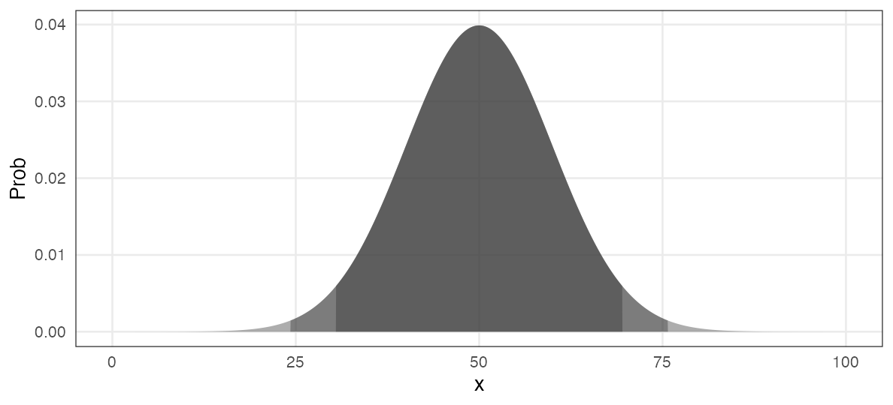
\[ \text{Prob}(x \mid \mu,~\sigma) = \frac 1 {\sqrt{2 \pi \sigma^2}} \exp \left(\frac {-(x - \mu)^2} {2\sigma^2} \right) \]
正規分布に近づくものがいろいろある
標本平均の反復(中心極限定理); e.g., 一様分布 [0, 100) から40サンプル
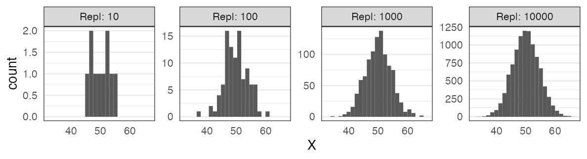
大きい$n$の二項分布
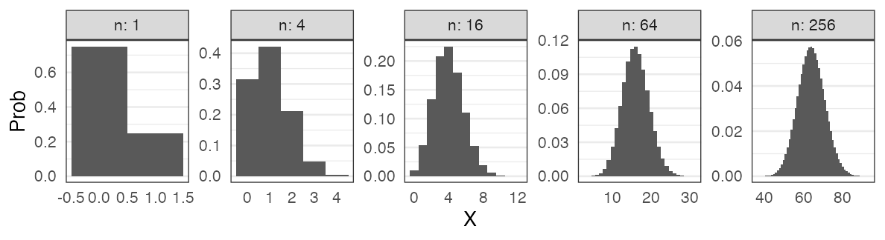
正規分布に近づくものがいろいろある
大きい$\lambda$のポアソン分布
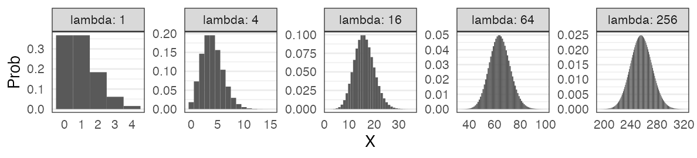
平均値固定なら$k$が大きくなるほど左右対称に尖るガンマ分布
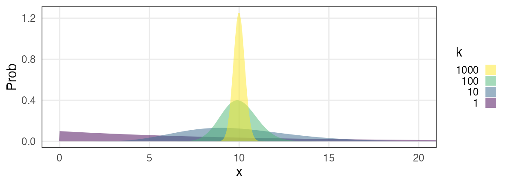
Major probability distributions and related phenomena
- Discrete uniform distribution
- コインの表裏、サイコロの出目1–6
- Negative binomial distribution (Geometric distribution if n = 1)
- 成功率pの試行が初めて成功するまでの失敗回数
- Binomial distribution
- 成功率p、試行回数nのうちの成功回数
- Poisson distribution
- 単位時間あたり平均$\lambda$回起こる事象の発生回数
- Gamma distribution (Exponential distribution if k = 1)
- ポアソン過程でk回起こるまでの待ち時間
- Normal/Gaussian distribution
- 確率変数の和、平均値
現実には、確率分布に「従わない」ことが多い
植物100個体から8個ずつ種子を取って植えたら全体で半分ちょい発芽。
親1個体あたりの生存数はn=8の二項分布になるはずだけど、
極端な値(全部死亡、全部生存)が多かった。
「それはなぜ？」と考えて要因を探るのも統計モデリングの仕事。
「普通はこれに従うはず」を理解してこそできる思考。
Pseudo Random Number Generator
コンピューター上でランダムっぽい数値を出力する装置。
実際には決定論的に計算されているので、
シード(出発点)と呼び出し回数が同じなら出る数も同じになる。
set.seed(42)
runif(3L)
# 0.9148060 0.9370754 0.2861395
runif(3L)
# 0.8304476 0.6417455 0.5190959
set.seed(42)
runif(6L)
# 0.9148060 0.9370754 0.2861395 0.8304476 0.6417455 0.5190959
シードに適当な固定値を与えておくことで再現性を保てる。
ただし「このシードじゃないと良い結果が出ない」はダメ。
さまざまな「分布に従う」乱数を生成することもできる。
いろんな乱数を生成・可視化して感覚を掴もう
n = 100
x = sample.int(6, n, replace = TRUE)
x = runif(n, min = 0, max = 1)
x = rgeom(n, prob = 0.5)
x = rbinom(n, size = 3, prob = 0.5)
x = rpois(n, lambda = 10)
x = rnorm(n, mean = 50, sd = 10)
print(x)
p1 = ggplot(data.frame(x)) + aes(x)
p1 + geom_histogram() # for continuous values
p1 + geom_bar() # for discrete values
🔰 小さい n から徐々に大きくして変化を確認しよう。
🔰 ほかのオプションもいろいろ変えて変化を確認しよう。
🔰 1%の当たりを狙って10連ガチャを回す人が100万人いたら、
全部はずれ、1つ当たり、2つ当たり… の人はどれくらいいるか？
(Quartoでどうまとめるか、腕の見せ所)
Fitting probability distributions to data
The number of seeds were counted for each of 50 plant individuals.
Individual A has 2 seeds, B has 4 seeds, …
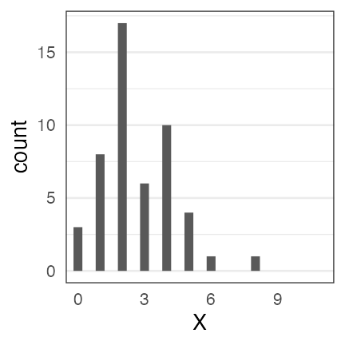
This count data looks Poisson-distributed.
What is the optimal $\lambda$ value?
Fitting probability distributions to data
The number of seeds were counted for each of 50 plant individuals.
Individual A has 2 seeds, B has 4 seeds, …
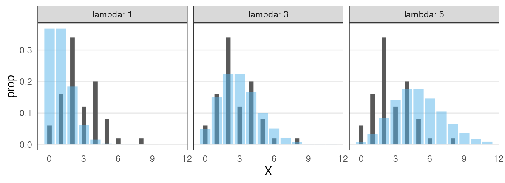
This count data looks Poisson-distributed.
What is the optimal $\lambda$ value?
Observations in black. Poisson distribution in blue. $\lambda \approx 3$ looks good.
Likelihood: a measure for goodness-of-fit
The probability to observe the data $D$ given the model $M$.
$\text{Prob}(D \mid M)$
Likelihood function is the same probability from different viewpoints:
- as a function of model $M$ given the data $D$,
$L(M \mid D)$ - as a function of parameters $\theta$,
$L(\theta \mid D)$ or $L(\theta)$
Example of likelihood calculation
Data $D$: 4 heads (H) and 1 tail (T) in tossing a coin 5 times
Assuming the probability of coming up head $p = 0.5$:
Assuming the probability of coming up head $p = 0.8$:
$L(0.8 \mid D) > L(0.5 \mid D)$
$p = 0.8$ is more likely.
Likelihood in the example of Poisson distribution
The number of seeds were counted for each of 50 plant individuals.
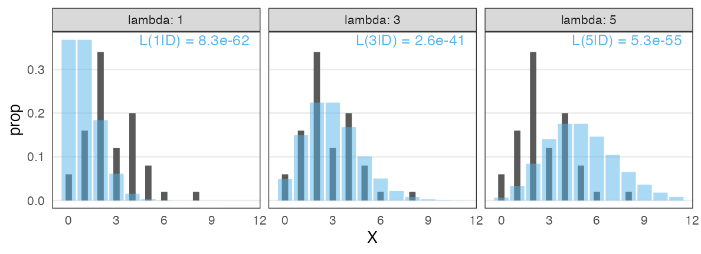
OK, $\lambda = 3$ is better than the other two. What is the best.
Maximum Likelihood Estimation
Log likelihood is often easier to handle.
Solving the differential equation for $\lambda$ …… finds the sample mean
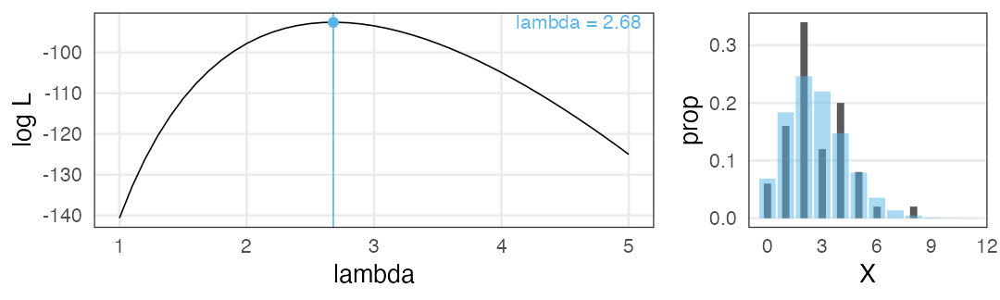
MLE does not give you “true λ”
The data was actually generated from “$X \sim \text{Poisson}(\lambda = 3.0)$”.
By replicating “sample 50 individuals → MLE” 1,000 times,
we find great variability in estimation and empirical distributions:
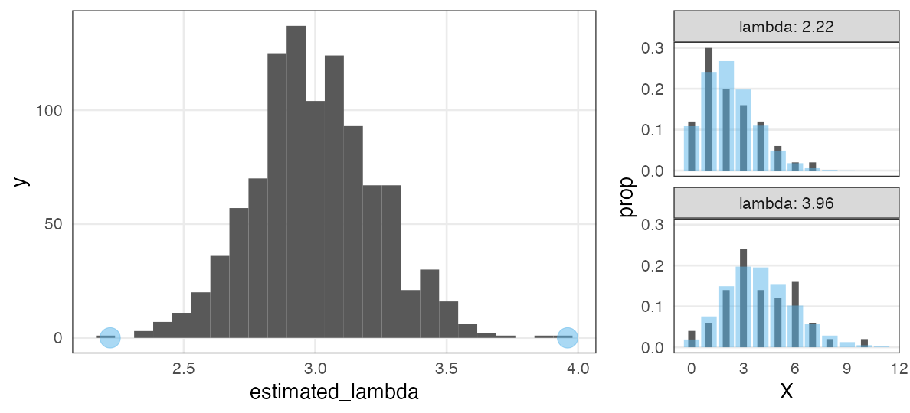
Note: Fitting to each sample looks not bad!
Alleviated by increasing sample size
1,000 replications of MLE with $n$ individuals from $X \sim \text{Poisson}(\lambda = 3.0)$:
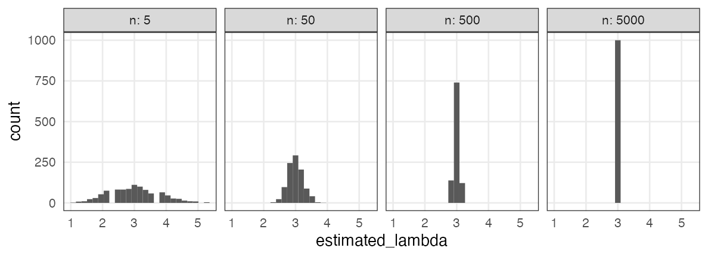
Q. How much is enough?
A. Depends on what you estimate, acceptable error range, etc.
Mathematical models in data science
All models are wrong, but some are useful. — George E. P. Box
Toolbox of statistical modelling
- Random variable $X$
- Probability distribution $X \sim f(\theta)$
- parameters $\theta$
- Likelihood
- The probability to observe the data given the model: $\text{Prob}(D \mid M)$
- as a function of model given the data → likelihood function $L(M \mid D),~L(\theta \mid D)$
- Maximum Likelihood Estimation to fit parameters $\hat \theta$
🔰 Challenge 1: likelihood
Rolling a dice 10 times, 3 sixes were observed.
-
Calculate likelihood assuming the probability to come up 6 $p = 1/6$.
-
Calculate likelihood assuming the probability to come up 6 $p = 0.2$.
-
Draw a graph with $p$ as horizontal axis, log likelihood as vertical axis.
-
Estimate $p$ with MLE.
Excellent, if solved with math; Good, if solved with R; OK, by eye or intuition.
- Hint
- $\binom 5 2 = {}_5 \mathrm{C} _2 = 10$ can be achieved with
choose(5, 2)in R.
参考文献
- データ解析のための統計モデリング入門 久保拓弥 2012
- StanとRでベイズ統計モデリング 松浦健太郎 2016
- RとStanではじめる ベイズ統計モデリングによるデータ分析入門 馬場真哉 2019
- データ分析のための数理モデル入門 江崎貴裕 2020
- 分析者のためのデータ解釈学入門 江崎貴裕 2020
- 統計学を哲学する 大塚淳 2020
- 科学とモデル—シミュレーションの哲学 入門 Michael Weisberg 2017
(原著: Simulation and Similarity 2013)